← Start Now! — Meditation and Spiritual Exercises
The Rosicrucian Path
Learn this chapter through its own lessons, then compare the relevant source passages.
PDF 209–230 · 3 teaching lessons
Study and independence in the Rosicrucian path
Understand why thinking precedes symbolic practice.
The Rose Cross and its morning–evening forms
Build the symbol before working with it.
The signature, philosophical fire and water
Read alchemical images as spiritual transformations.
Practice texts and source reader
These are selected source pages from this chapter, including its longer practice texts. The original English page is the reference for uncertain wording or layout. The OCR transcription may contain errors and is not a newly verified edition. Open a source image at full size to read its details.
Source PDF position 212 · English
Read the searchable source transcription
### The Rose Cross
The mystic center of Rosicrucianism is the symbol of the Rose Cross: the black cross with seven roses. One of the primary practices taught by Steiner is the meditation (and visualization) of this image. We begin with the classic description of meditating the Rose Cross from An Outline of Esoteric Science.
We can rise to a state of suprasensory consciousness only from ordinary waking consciousness, the condition in which the soul lives prior to its ascent. Training provides the soul with means that lead it out of the ordinary waking state. Among the first methods provided by the training discussed here are some that can still be described as functions of ordinary waking consciousness.
The most important of these methods involves silent activities of the soul. The soul devotes itself to certain specific mental images that contain the power to awaken certain hidden faculties in the soul. Such mental images are not like those of ordinary daily life, whose purpose is to depict external phenomena; and the more truly they accomplish this, the “truer” such images are. In this sense, it is part of their essential nature to be “true.” This, however, is not the goal of the mental images the soul concentrates on when its purpose is spiritual training. Images intended for spiritual training are structured so that they do not reproduce anything external, but have an awakening effect on the soul.
The best mental, or thought, pictures for this purpose are symbolic, though others can also be used. The substance of such mental images is unimportant; the point is for the soul to devote all its energy to emptying its consciousness of everything except the given mental image.
In our everyday soul life, the soul's energies are divided among many different things, and our mental images shift rapidly. In spiritual training, the point is to concentrate the soul’s whole activity on a single mental image, freely chosen as a focus of awareness. Consequently, symbolic images are better than those that represent outer objects or processes and are connected with the external world,Source PDF position 213 · English
Read the searchable source transcription
since they do not force the soul to rely on itself, as do the symbols created through its own energy. The object of imagination is unimportant. What is important is that the process of visualizing the image frees the soul from dependence on anything physical.
By recalling what happens in memory, we can begin to understand what it means to immerse ourselves in a visualized image.
For example, if we look at a tree and then turn away from it so that we can no longer see it, we can reawaken the mental image of the tree out of our memory. The mental image we have of a tree when it is not actually present before our eyes is the memory of the tree.
Let us imagine that we retain this memory in our soul. We allow the soul to rest on this memory image and attempt to exclude all other images until the soul is immersed in the memory image of the tree. In this case, however, although the soul is immersed in a mental image, the image is a copy of something perceived through the senses. But if we attempt the same thing with an image we insert into our consciousness through a free act of volition, we are gradually able to achieve the necessary effect. I will illustrate this with a single example of contemplating, or meditating, on a symbolic mental image.
First, this mental image must be built up in the soul. I can do this as follows: I imagine a plant taking root in the ground, sprouting one leaf after another, and continuing to develop up to the point of flowering. Then I imagine a human being alongside this plant. In my soul, I bring the thought to life that this human being has qualities and abilities that we can call more perfected than those of the plant. I think of how human beings can move freely in response to feelings and intentions, whereas plants are fixed in the ground. But then I also notice that, although human beings are certainly more perfected than plants are, they also have characteristics that we do not perceive in plants—characteristics whose absence can, in fact, make plants seem more perfected than humans are. Human beings are filled with desires and passions, which their actions follow, and certain mistakes result from those drives and passions. In contrast, I see how plants obey the pure laws of growth, developing one leaf after another and opening their flowers without passion to the Sun’s innocent rays. I can say that human beings have an advantage over plants in terms of a certain kind of perfection, but that the price paid for this perfection is that urges, desires, and passions have been allowed to enter human nature, in contrast to the forces of the plants that seem so pure to me.Source PDF position 214 · English
Read the searchable source transcription
Next, I visualize green sap flowing through the plant. I imagine this as an expression of the pure, passionless laws of growth. Then I visualize red blood flowing through human arteries and imagine it as an expression of urges, desires, and passions. | allow all this to arise in my soul as a vivid thought.
Now I think about how human beings are capable of development, how they can use the higher soul faculties to cleanse and purify their urges and passions. I think about how this destroys a baser element in these urges and passions, which are then reborn on a higher level. The blood may then be imagined as the expression of these cleansed and purified urges and passions. For example, in the spirit I see a rose and say: In the red sap of the rose blossom I see the color of the plant’s green sap transformed into red, and the red rose, like the green leaf, obeys the pure, passionless laws of growth. Let the red of the rose symbolize the blood that is an expression of purified urges and passions. They have been stripped of their baser element and are now similar in purity to the forces that are active in the red rose.
At this point, I try not only to assimilate these thoughts with my intellect, but also to bring them to life in my feeling. I can have a blissful sensation when I imagine the growing plant’s purity and absence of passion; I can generate a feeling in myself for the price human beings must pay for greater perfection by acquiring urges and desires. This can transform my earlier bliss into a serious feeling. Next, a feeling of liberating happiness can stir in me as I devote myself to the thought of the red blood that can become the vehicle of inwardly pure experiences, just like the red sap of the rose blossom. It is important not to think the thoughts that serve to build up a symbolic mental image unaccompanied by feeling.
After living in these thoughts and feelings for a while, we can transform them into a symbolic image as follows: Imagine a black Cross. Let this be the symbol of the baser element that has been eliminated from our urges and passions. Imagine seven radiant red roses arranged in a circle at the intersection of the two beams of the Cross. Let these symbolize the blood that expresses the cleansed purified passions and urges. This symbolic image must now be evoked for the mind's eye as described in relation to a memory picture. A symbolic mental image like this has the power to awaken our souls when we inwardly immerse ourselves in it with devotion. Try to exclude all other mental images while immersed in this way. As vividly as possible, allow this symbol alone to linger in spirit before the mind’s eye.Source PDF position 215 · English
Read the searchable source transcription
It is important that this symbol not be proffered immediately as a soul-awakening image, but built up first with specific ideas about plants and human beings, since the effectiveness of this kind of symbol depends on its being assembled in this way before one uses it for meditation. If we imagine it without first going through this buildup in our souls, the symbol remains cold and has much less effect than when it receives soul-illuminating force through such preparation.
During meditation, however, do not summon all of the preparatory thoughts. Allow only the image to linger vividly in the spirit, while permitting the feeling that results from the preparatory thoughts to resonate. In this way, the symbol becomes a token of the feeling experience, and its effectiveness arises from the fact that the soul dwells on that experience. The longer one dwells on it without the intervention and disruption of any other images, the more effective the whole process will be. It is also a good idea to frequently repeat the described process of building the image—outside the time set aside for the actual meditation—through thoughts and feelings, so that the feeling does not fade. The more patience one has in renewing it, the more significant the image becomes for the soul ....
The purpose of this Rose Cross symbol is to demonstrate the process of effective meditation. In spiritual training, one can use any number of images of this kind, and they can be built up in many different ways. Certain sentences, phrases, or single words may also be assigned as subjects for meditation. The purpose of all of these methods of meditation, however, is to tear the soul away from sensory perception and rouse it to a kind of activity in which physical sensory impressions have no meaning; the essential thing is to awaken dormant inner soul faculties.
—An Outline of Esoteric Science
### Meditations
Rosicrucianism is a path of practice. Throughout his life Rudolf Steiner gave many indications and meditation practices to his students that were explicitly Rosicrucian in nature. Here are a few of the meditations he gave.Source PDF position 216 · English
Open the original source page at full size

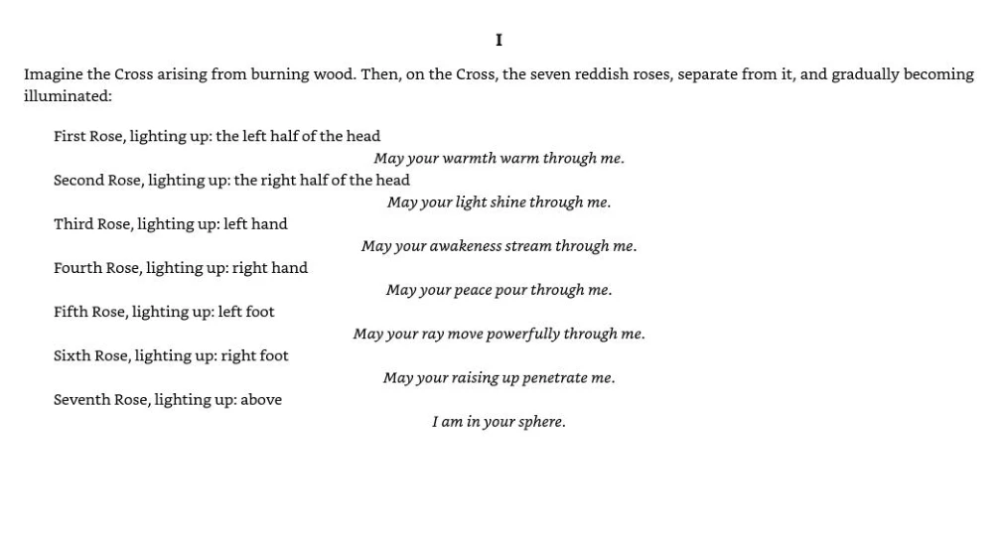
Read the searchable source transcription
Imagine the Cross arising from burning wood. Then, on the Cross, the seven reddish roses, separate from it, and gradually becoming illuminated:
First Rose, lighting up: the left half of the head
May your warmth warm through me.
Second Rose, lighting up: the right half of the head
Third Rose, lighting up: left hand
Fourth Rose, lighting up: right hand
May your light shine through me.
May your awakeness stream through me.
Fifth Rose, lighting up: left foot
Sixth Rose, lighting up: right foot
Seventh Rose, lighting up: above
May your peace pour through me.
May your ray move powerfully through me.
May your raising up penetrate me.
Iam in your sphere.Source PDF position 217 · English
Open the original source page at full size

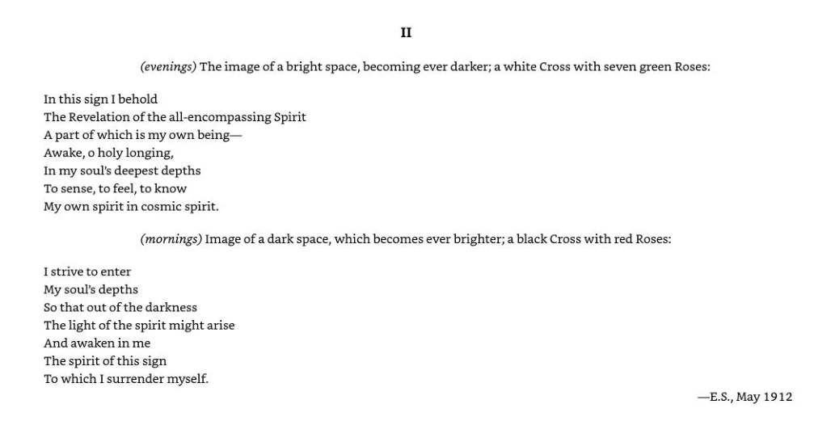
Read the searchable source transcription
Il
(evenings) The image of a bright space, becoming ever darker; a white Cross with seven green Roses:
In this sign I behold
The Revelation of the all-encompassing Spirit A part of which is my own being—
Awake, o holy longing,
In my soul's deepest depths
To sense, to feel, to know
My own spirit in cosmic spirit.
(mornings) Image of a dark space, which becomes ever brighter; a black Cross with red Roses:
I strive to enter
My soul’s depths So that out of the darkness
The light of the spirit might arise And awaken in me
The spirit of this sign To which I surrender myself.
—E.S., May 1912Source PDF position 218 · English
Open the original source page at full size

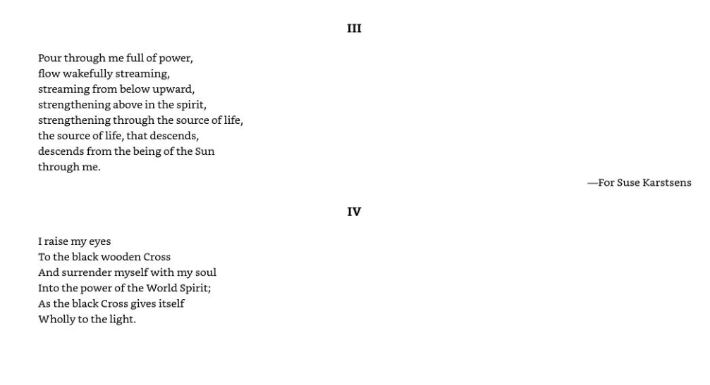
Read the searchable source transcription
Pour through me full of power,
flow wakefully streaming,
streaming from below upward, strengthening above in the spirit, strengthening through the source of life, the source of life, that descends, descends from the being of the Sun through me.
I raise my eyes
To the black wooden Cross
And surrender myself with my soul Into the power of the World Spirit; As the black Cross gives itself Wholly to the light.
Ill
IV
—For Suse KarstsensSource PDF position 219 · English
Open the original source page at full size

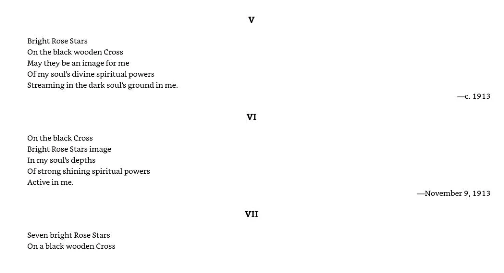
Read the searchable source transcription
Bright Rose Stars
On the black wooden Cross
May they be an image for me
Of my soul's divine spiritual powers Streaming in the dark soul's ground in me.
On the black Cross
Bright Rose Stars image In my soul's depths Of strong shining spiritual powers Active in me.
Seven bright Rose Stars On a black wooden Cross
vI
Vil
—c. 1913
—November 9, 1913Source PDF position 220 · English
Open the original source page at full size

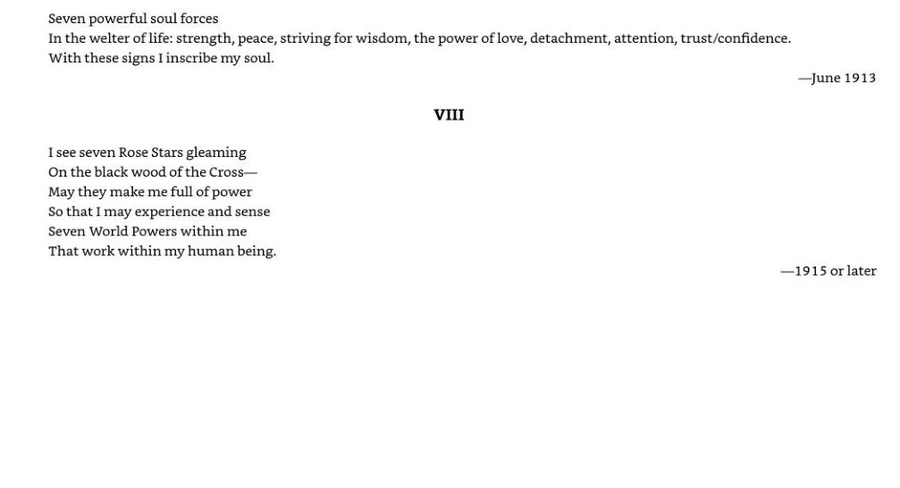
Read the searchable source transcription
Seven powerful soul forces In the welter of life: strength, peace, striving for wisdom, the power of love, detachment, attention, trust/confidence. With these signs | inscribe my soul.
Vill
—June 1913
I see seven Rose Stars gleaming
On the black wood of the Cross—
May they make me full of power So that I may experience and sense Seven World Powers within me
That work within my human being.
—1915 or laterSource PDF position 221 · English
Open the original source page at full size

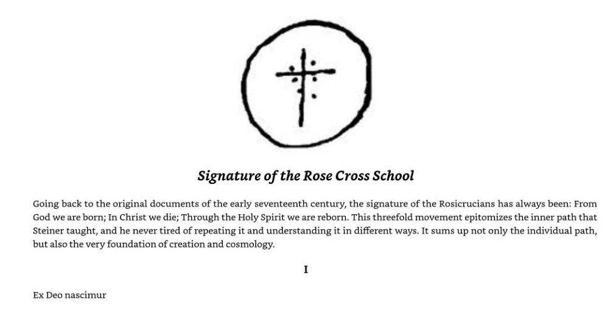
Read the searchable source transcription
## Signature of the Rose Cross School
Going back to the original documents of the early seventeenth century, the signature of the Rosicrucians has always been: From God we are born; In Christ we die; Through the Holy Spirit we are reborn. This threefold movement epitomizes the inner path that Steiner taught, and he never tired of repeating it and understanding it in different ways. It sums up not only the individual path,
but also the very foundation of creation and cosmology.
Ex Deo nascimurSource PDF position 222 · English
Open the original source page at full size

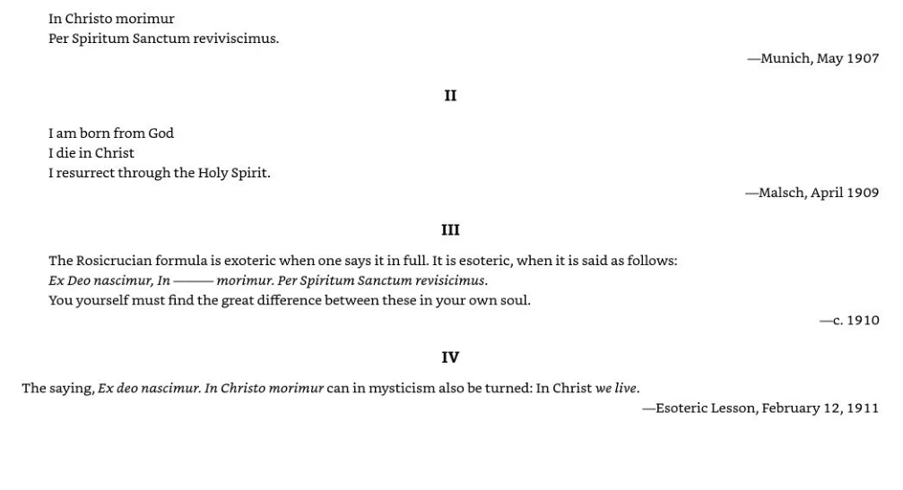
Read the searchable source transcription
In Christo morimur
Per Spiritum Sanctum reviviscimus.
Il
—Munich, May 1907
Iam born from God
I die in Christ
I resurrect through the Holy Spirit.
Ill
The Rosicrucian formula is exoteric when one says it in full. It is esoteric, when it is said as follows: Ex Deo nascimur, In
morimur. Per Spiritum Sanctum revisicimus.
You yourself must find the great difference between these in your own soul.
—Malsch, April 1909
—c. 1910
IV
The saying, Ex deo nascimur. In Christo morimur can in mysticism also be turned: In Christ we live.
—Esoteric Lesson, February 12,1911Source PDF position 223 · English
Open the original source page at full size

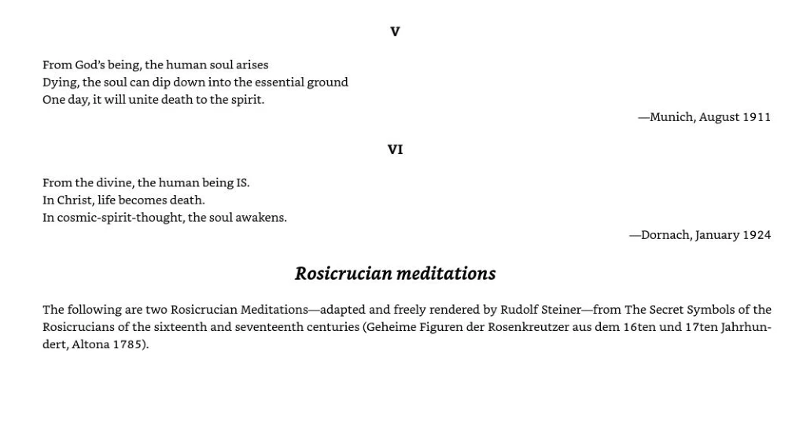
Read the searchable source transcription
From God's being, the human soul arises Dying, the soul can dip down into the essential ground One day, it will unite death to the spirit.
—Munich, August 1911
From the divine, the human being IS. In Christ, life becomes death. In cosmic-spirit-thought, the soul awakens.
### Rosicrucian meditations
—Dornach, January 1924
The following are two Rosicrucian Meditations—adapted and freely rendered by Rudolf Steiner—from The Secret Symbols of the Rosicrucians of the sixteenth and seventeenth centuries (Geheime Figuren der Rosenkreutzer aus dem 16ten und 17ten Jahrhun- dert, Altona 1785).Source PDF position 224 · English
Open the original source page at full size

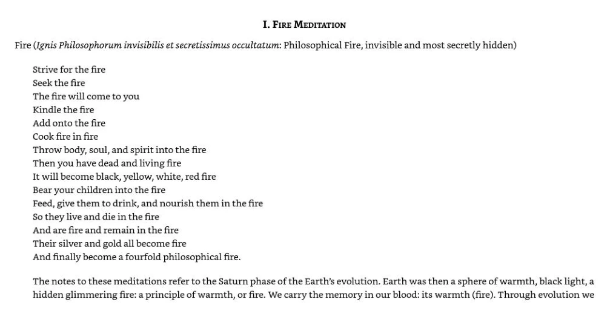
Read the searchable source transcription
I. Frre MEDITATION
Fire (Ignis Philosophorum invisibilis et secretissimus occultatum: Philosophical Fire, invisible and most secretly hidden)
Strive for the fire
Seek the fire
The fire will come to you
Kindle the fire
Add onto the fire
Cook fire in fire
Throw body, soul, and spirit into the fire
Then you have dead and living fire
It will become black, yellow, white, red fire
Bear your children into the fire
Feed, give them to drink, and nourish them in the fire So they live and die in the fire
And are fire and remain in the fire
Their silver and gold all become fire
And finally become a fourfold philosophical fire.
The notes to these meditations refer to the Saturn phase of the Earth’s evolution. Earth was then a sphere of warmth, black light, a hidden glimmering fire: a principle of warmth, or fire. We carry the memory in our blood: its warmth (fire). Through evolution weSource PDF position 225 · English
Open the original source page at full size

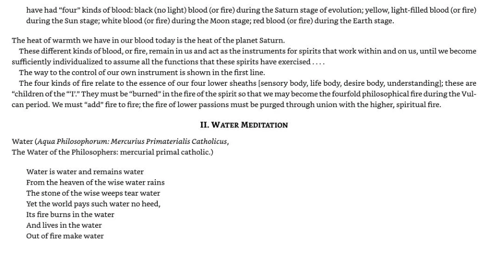
Read the searchable source transcription
have had “four” kinds of blood: black (no light) blood (or fire) during the Saturn stage of evolution; yellow, light-filled blood (or fire) during the Sun stage; white blood (or fire) during the Moon stage; red blood (or fire) during the Earth stage.
The heat of warmth we have in our blood today is the heat of the planet Saturn.
These different kinds of blood, or fire, remain in us and act as the instruments for spirits that work within and on us, until we become sufficiently individualized to assume all the functions that these spirits have exercised ....
The way to the control of our own instrument is shown in the first line.
The four kinds of fire relate to the essence of our four lower sheaths [sensory body, life body, desire body, understanding]; these are “children of the “‘l’.” They must be “burned” in the fire of the spirit so that we may become the fourfold philosophical fire during the Vul- can period. We must “add” fire to fire; the fire of lower passions must be purged through union with the higher, spiritual fire.
II. WATER MEDITATION
Water (Aqua Philosophorum: Mercurius Primaterialis Catholicus, The Water of the Philosophers: mercurial primal catholic.)
Water is water and remains water
From the heaven of the wise water rains
The stone of the wise weeps tear water Yet the world pays such water no heed, Its fire burns in the water
And lives in the water
Out of fire make waterSource PDF position 226 · English
Open the original source page at full size

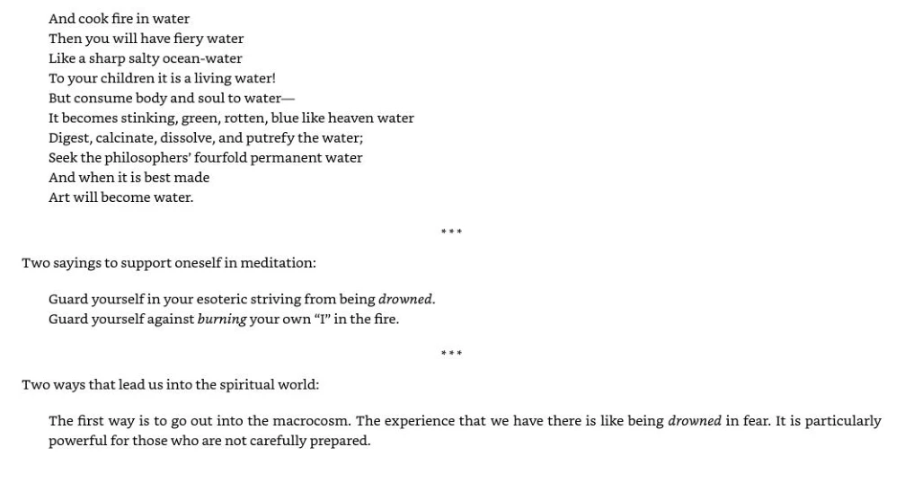
Read the searchable source transcription
And cook fire in water
Then you will have fiery water
Like a sharp salty ocean-water
To your children it is a living water!
But consume body and soul to water—
It becomes stinking, green, rotten, blue like heaven water Digest, calcinate, dissolve, and putrefy the water;
Seek the philosophers’ fourfold permanent water
And when it is best made
Art will become water.
Two sayings to support oneself in meditation:
Guard yourself in your esoteric striving from being drowned. Guard yourself against burning your own “I” in the fire.
eet
see
Two ways that lead us into the spiritual world:
The first way is to go out into the macrocosm. The experience that we have there is like being drowned in fear. It is particularly powerful for those who are not carefully prepared.Source PDF position 227 · English
Open the original source page at full size

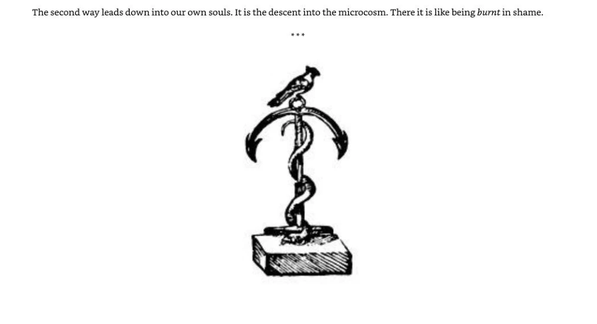
Read the searchable source transcription
The second way leads down into our own souls. It is the descent into the microcosm. There it is like being burnt in shame.
eetSource PDF position 228 · English
Open the original source page at full size

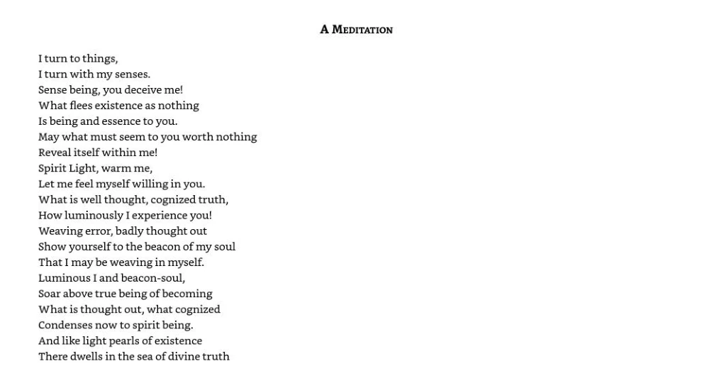
Read the searchable source transcription
Iturn to things,
Iturn with my senses.
Sense being, you deceive me!
What flees existence as nothing
Is being and essence to you.
May what must seem to you worth nothing Reveal itself within me!
Spirit Light, warm me,
Let me feel myself willing in you. What is well thought, cognized truth, How luminously I experience you! Weaving error, badly thought out Show yourself to the beacon of my soul That I may be weaving in myself. Luminous I and beacon-soul,
Soar above true being of becoming What is thought out, what cognized Condenses now to spirit being.
And like light pearls of existence
There dwells in the sea of divine truth
A MEDITATIONSource PDF position 229 · English
Open the original source page at full size

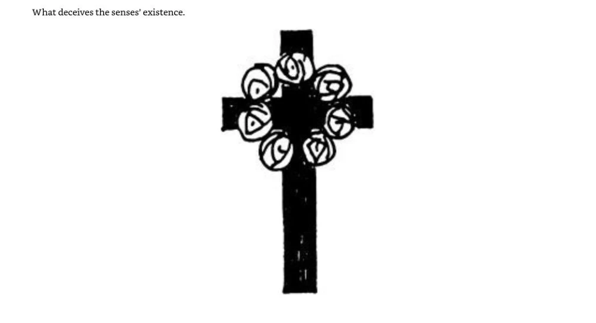
Read the searchable source transcription
What deceives the senses ’ existence.Source PDF position 230 · English
Open the original source page at full size

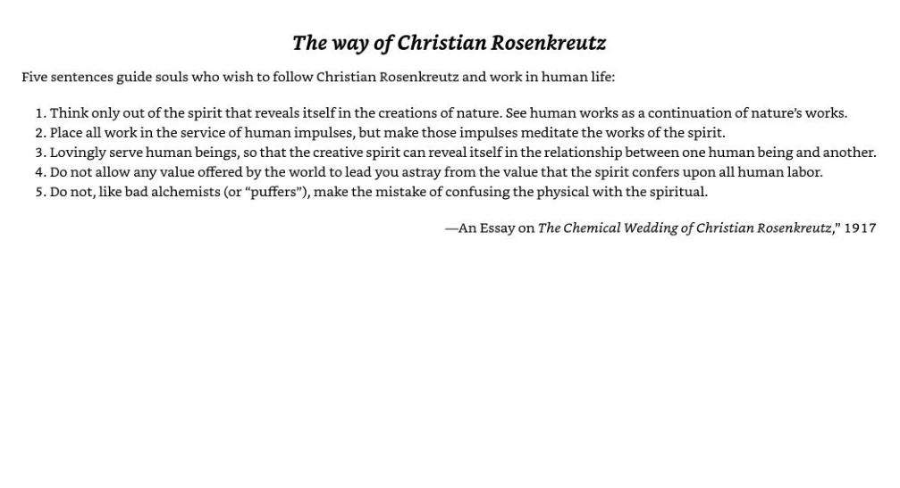
Read the searchable source transcription
## The way of Christian Rosenkreutz
Five sentences guide souls who wish to follow Christian Rosenkreutz and work in human life:
1. Think only out of the spirit that reveals itself in the creations of nature. See human works as a continuation of nature’s works.
2. Place all work in the service of human impulses, but make those impulses meditate the works of the spirit.
3. Lovingly serve human beings, so that the creative spirit can reveal itself in the relationship between one human being and another.
4. Do not allow any value offered by the world to lead you astray from the value that the spirit confers upon all human labor.
5. Do not, like bad alchemists (or “puffers”), make the mistake of confusing the physical with the spiritual.
—An Essay on The Chemical Wedding of Christian Rosenkreutz,” 1917